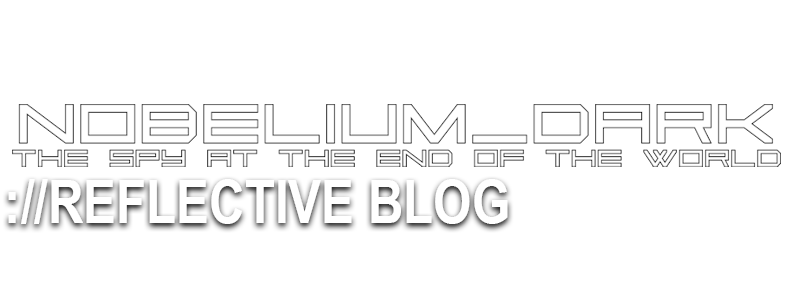
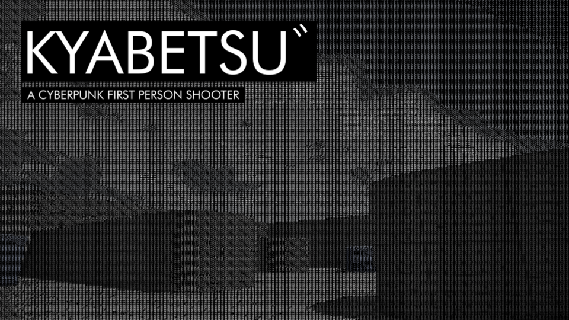
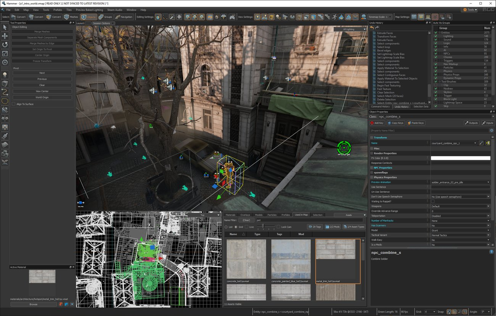
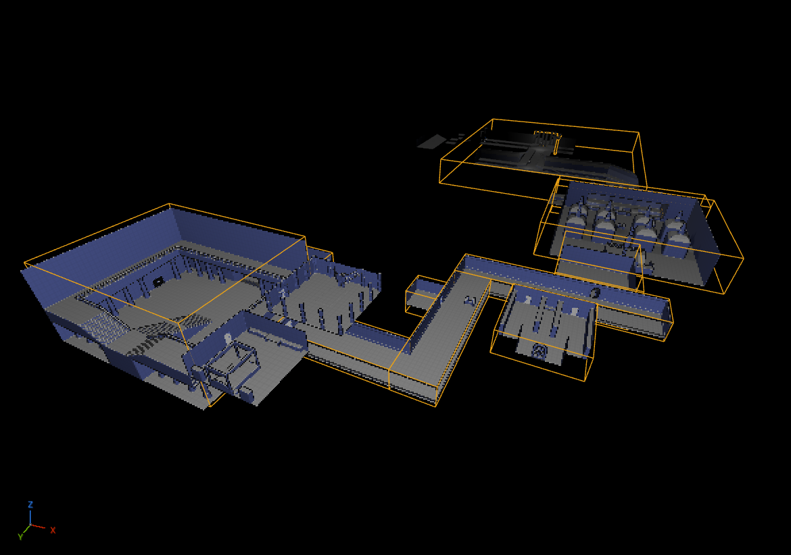
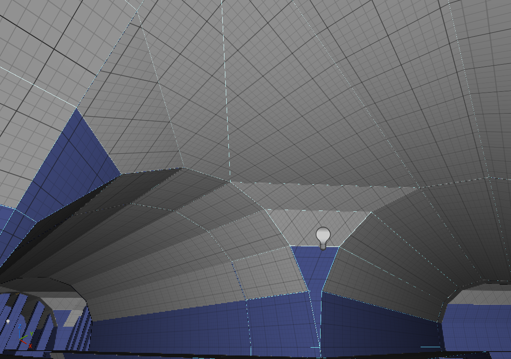

Entry Started: 10th February 2026
Last Edited: 21st April 2026
External Documents
Pre-Final Year Brainstorming Document
Project NDark Quake Mod Pitch
Project NDark Pitch Presentation
Project NDark Impromptu Design Document
Back in my first year of University, my project for the "Gameplay Prototyping" module was a little game called "KYABETSU゛ NT".

KYABETSU was a game that took heavy inspiration from Rare's GoldenEye 007 and Perfect Dark in terms of its gameplay and design, or as I put it in the Design Document: "...re-capturing the magic of shooters from the late 1990s and early 2000s", this was all due to me having played those games most recently before beginning pre-production and having enjoyed them a lot.
The project's development spanned about a year and in that year, I was able to include two small levels, an objective system, multiple weapons with custom meshes, textures and animations, an enemy with basic AI, etc.
Overall, I'm still quite satisfied with what I was able to get done during those early years, especially me going out of my way to create custom weapon models and animations, that wasn't fully necessary for the module, I just did it because I wanted to.
But as time crawled on, there was always a lingering notion that I could've done more with the formula that I had created and that there were ways that I can do it again, but much better, much more efficient.
You see, this was part of my first year of University, my first time really sinking my teeth into the Unreal Engine and because of that, I lacked a lot of the experience that I do right now, KYABETSU had a lot of hacks in it to try and make its existing systems work both on their own and with each other and attempting to scale them up would take longer than what most would deem neccessary.
looking back at it, I thought about the ways that I could improve upon this previous work, and an opportunity would soon arrive.
THE TIME HAS COME
The Final Year of my undergraduate course in Games Design has come, and with it came the "Major Project" module, the penultimate module, the make or break module, etc, this module is so important, it takes place over two semesters.
With this new module, I deemed it time to revisit the same inspirations that spawned KYABETSU, combining it with the knowledge gained from tinkering with the Unreal Engine for a few years and produce a proper, fully playable game for the public to enjoy.
Thus enters, NOBELIUM_DARK: The Spy at The End of The World. But NDark didn't start out as an Unreal Engine project initially...
AB ANTIQUO
In the lead up to the actual beginning of the Final Year, we were given the task of brainstorming ideas and producing a pitch presentation for the Major Project, it could've been a wide variety of "things", it could've been a UI-focused project, an Art-focused one, an actual game, etc.
With that in mind, I wanted to make a game, but my initial idea may leave something to be desired. You may have noticed that one of the external documents is named the "Quake Mod Pitch".
NDark started as what was essentially a mod for the original Quake.
You may think that a bit odd. "Didn't you say that you wanted to take your inspirations from KYABETSU and apply them again, what happened?"
To put it simply, I had expanded my repertoire of "Retro/Classic" video games since creating KYABETSU, so I was no longer just taking inspiration from just GoldenEye and Perfect Dark, I was now also taking inspiration from games such as SiN, Shogo, Quake 1+2, Rise of The Traid, etc.
I was also attempting to broaden my skillset in more than just the Unreal Engine, I wanted to try out creating content for older games and their older engines, and I believed that turning that work into a 2 semester long commitment was a solid idea, so in the lead up to the beginning of Final Year, I got to work.
I grabbed the open source LibreQuake project and the Ironwail source port and went right in.
I was in deep, modelling, texturing and animating weapons, learning how to conform them to the limits of the Quake engine, while also creating a level to act as a proof of concept and to prove that I can make this in the Quake Engine, I can produce results instead of just sitting on my butt for two semesters.
The initial, unmarked pitch for NDark did not go well.
Primary points of critisism came from the fact that it isn't a "game" per se, but could've qualified for a Level Design project if I wanted to continue down the Quake path.
But I had decided to stick with creating a game, throwing out 99% of the work done on the Quake Mod iteration of NDark and went back to the Unreal Engine.
REGRESSUS AD UTERUM
Back to the Unreal Engine, I had decided to keep what inspired me with the original Quake Mod iteration, but now commiting to do KYABETSU again, but better.
I wanted to prove, mostly to myself, that I can design systems that are easily understood and can be easily scaled up or down to suit the needs of the project, with that primary goal in mind, I begun writing a more formal pitch for NDark.

This new iteration of NDark was recieved much better when presented to the lecturers, and with this new-found motivation, the project began development.
ARMA CHRISTI
The first thing that I worked on for this Unreal Engine version of NDark was the Weapon System, primarily because I felt it was important to get the guns right, that they feel fun to use, before getting into more of the broader gameplay aspects.
A previous, non-University related experiment of mine was to place a weapon's data inside a Data Asset, meaning its Skeletal Model, Animations, Sound Effects, Fire Rate & Damage Numbers, etc, are stored in an almost spreadsheet like format and individual variables can be pulled from to suit whatever is required.
For NDark, I wished to take this further, by moving all weapon related functions into a separate Actor Component, providing another layer of separation from the Player Blueprint, where in my previous projects, all the primary weapon code resided with any NPC weapons having their own separate mountain of code.
It became a common element within NDark where, if a piece of code could be applied to multiple actors instead of one, I would try to find a way to make sure that multiple actors could use that piece of code, mainly through the usage of Actor Components, "Manager" Actors, etc.
DE NOBIS FABULA NARRATUR
But for now let's talk about the intended setting and narrative for NDark, you can already get a solid idea as to the foundation of the story thanks to the subtitle "The Spy at The End of The World".
If I wanted to describe the story of NDark in a short of a sentence as possible, it would be: "Spy completes contract work while slowly discovering a conspiracy involving the Occult, the Underworld and the End of The World as it enters its endgame."
The primary inspiration for this narrative comes from the "Shin Megami Tensei" (SMT) franchise and its themes of religion mixing with science-fiction and the occult.
I had been getting more and more into SMT due to it being the parent franchise of "Persona", which is much more well known in the west.
SMT had hooked me with its wide variety of stories, characters, locations, themes, music and many other factors that slowly morphed it into one of my favourite RPG series.
This also provided me with the opportunity to work on my writing chops for the story of NDark.
Mainly due to me having to write mission briefings for any levels that I make that aren't test levels, I would have to learn to write in a way that is enderring while also providing context as to what is going on, who all the major players are, what the objectives are, why are we going to the place that we're going, when will the fog take us, etc.
ARS GRATIA ARTIS
An intention of mine was for NDark to have a similiar level of graphical fidelity to games such as GoldenEye and Perfect Dark, including low resolution textures, low polygon count models, etc.
The first step that I had taken to achieve the desired look was the usage of a Third-Party plugin/suite of assets, in this case, Marcis's Retro Graphics (also known as PSXFX).
Using this plugin, I'm able to limit the colours to try and match the Nintendo 64's 24-bit colour depth and incorporate various Nintendo 64-like effects and features such as Fog, Vertex Lighting, etc.
The onus was still on me however, to source textures and adjust them to fit the desired look, so I dove into free texture sites like cc0textures and PolyHaven and found appropriate textures in import into the project.
But all of the textures from these sites are only available in 1K resolution or higher, I don't know if you know this, but the Nintendo 64 had only 4 MB of Rambus DRAM by default and a Coprocessor Chip clocked at 62.5 MHz for graphics. This means that having multiple 1K textures is pretty much impossible for a regular Nintendo 64 to handle, so I need to downsize.
Luckily, Unreal Engine comes with some texture import settings that allow me to change the resolution of the textures to a much more modest 256x256 resolution.
This "philosophy" also extends to the weapon models, all of the weapons in NDark have low polygon counts and feature a 256x256 resolution texture.
The actual modelling and texturing of the weapons was done using a photo of a real gun as a reference, and the modelling a rough approximation of the weapon using as few primatives as possible, then using that same photo reference to create the texture, in the digital equivalent of cutting pieces out of a magazine to stick into a scrapbook.
The weapon muzzle flashes & bullet casings were another creation of Marcis, this time from their Retro Particles set.
These particle effects were set to fire/appear at specific points within a weapon's firing animations, those and all other weapon animations, models and textures were created by Me in Blender.
One point of feedback that I had received in regards to the pistol reload animations was that it reminded the lecturers about Perfect Dark and its reload animations, which typically features the weapon coming up to let the magazine fall out before the rest of the reload animation.
This was something that I would later try and lean in more to when animating other types of weapons such as SMGs and Shotguns.
IN REGIONE CAECORUM REX EST LUSCUS
Being inspired by GoldenEye and Perfect Dark also lead me to attempt to, at the very least, emulate certain mechanics, especially in regards to the Player Controller and how they use weapons.
One of these mechanics is the "fine-aim", where the Player is standing still and their crosshair is converted into a free aiming cursor that the weapon follows, allowing for more accurate shots to be made.

Recreating this in the Unreal Engine for NDark proved to be the hardest mechanic that I have implemented to date, it involved converting the player's mouse's position into a 2D vector so that it can be used as the position value for a crosshair widget.
Then, converting the mouse's position again, this time to world space so that it can be used as the new start point for any weapon firing functions.
Following that, a near constantly firing function that updates the rotation of the player's viewmodel to match the position of the free-aim crosshair.
It was a long and slightly painful process, but with it implemented, it opened the door for me to implement mechanics that tie into this one in a way that is fun/engaging to players, mechanics including easier headshots on enemies, precision shots on destructable objects, etc.
FINIS ORIGINE PENDET
My experience with Retro/Classic games doesn't stop at just playing, I often find myself tinkering with the games, altering their content, playing around with community made modifications and tools.
Among these retro games are ones that have been created using the first ever version of the Unreal Engine.
While looking through the editing tools for the original Unreal Engine, I came across its trigger system.
How these triggers work is that they are assigned both a "Tag" and an "Event", whenever a trigger is activated, it "fires" its "Event", which means that any entity that has a "Tag" value that matches the trigger's "Event" value, is fired, this is used for automatic doors, waking enemies from sleep/idle, activating scripted sequences, etc.
This system was very interesting to me the first time I was able to fully grasp it, and I wondered if I could re-create this setup in Unreal Engine 5 for NDark, as a way of speeding up the level scripting process.
It was suprisingly easy (probably because the system itself was pretty simple), mainly requiring a Blueprint Interface to serve as the dispatcher for any actors that I wanted to be affected by any and all triggers, and combining UE5's existing actor tag system with a new "Event" variable to match the UE1 trigger behaviour as close as possible.
With this, I can more easily understand level scripting and be able to have actors trigger events in a level, all in the editor view, without having to go between the Level Blueprint and Editor.
Speaking of Levels, let's get into those...
QUA PATET ORBIS
Level Design in the modern game development space, to me, kinda sucks.
I'm more familliar with the old ways, back with the Source Engine where all of the Level, the blockouts, scripting, lighting, etc, were all as self contained within the engine and its editing kit as possible.
In the modern day, while there may still be blockouts of levels made in engine and the scripting may be handled and authored in engine, the rest of the work is donr largely in outside software, mainly modelling software like 3DS Max or Blender and then imported into the engine.
The Unreal Engine follows this modern philosophy, while there are tools within the engine that allow for the creation of elements such as vast, mountainous environments or quick and dirty grey-boxes, it's largely expecting you to create the final version of your levels' environments outside of the Unreal Editor.
I was sort of dreading having to create levels for NOBELIUM_DARK if it meant that I had to deal with this workflow, but, in the background, there was someone who was working on a solution.
In March of 2020, Valve had released Half-Life: Alyx, their "killer app" for Virtual Reality fully built in their brand new "Source 2" engine, sometime after the release of the game, Valve had made the "Workshop Tools" for the game publically available, included within, was their new version of the Hammer World Editor.

While this new Hammer Editor followed the modern convention of Level Creation by operating with Mesh Geometry instead of Brush Geometry, the actual mesh creation process, and the features surrounding it, allows someone to create fully detailed environments all within the editor, down to the door frames.
Things got even better in 2023 with the launch of Counter-Strike 2, its version of the Hammer Editor allowed for people to create models such as props, within the editor and then export them to a useable format.
It's tweets like this that got people who use other engines, namely Unreal, a little bit jealous that you could make environments this easily in Source 2, one of those people decided that they would try and essentially re-create Hammer's mesh creation process in the Unreal Engine, and distribute it as a Plugin, that plugin would be named "Scythe" and it's the plugin that I used for creating levels in NOBELIUM_DARK.

Working with Scythe was simply better than Unreal's base tools, by orders of magnitude, it makes the mesh creation process so much more seamless, I can create complex, curved geometry, such as a 3-way-corridor in a sewer with ease, something that I could never even dream of creating using the base tools.
